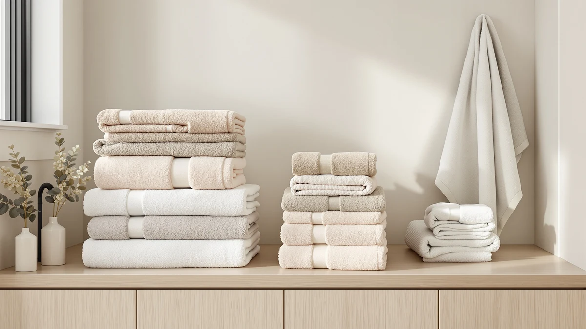

Tens Towels Pack of Review (2026): Worth It?
Prices and picks verified as of October 2026. Independent, reader-supported reviews.


Quick Answer
This tens towels pack of review found the Tens Towels Pack of 4 holds up well for daily use, thanks to a fast-drying cotton weave and a generous 30 x 60 inch size. It trades some plushness for that speed, so buyers who want a heavier, spa-style towel should look at the alternatives below instead.
Our pick: Tens Towels Pack of 4, $35.99 Check Price on Amazon
Bottom line: our top pick is the Tens Towels Pack of 4 Extra Large Bath Towels 30 x 60 Inches at $35.99.
Things to Know Before You Buy
- Each towel measures 30 x 60 inches, larger than the 27 x 54 inch standard used by most four-packs in this price range.
- The towels are woven from what the brand calls Super Fine Cotton, a thinner construction than typical 600-plus GSM sets, which speeds up drying but reduces plush weight.
- The set reviewed here ships in Dark Grey, and Tens Towels offers fewer solid color choices than brands like Wealuxe or White Classic.
- This tens towels pack of review compares listed specs and verified owner feedback rather than a lab test, since we do not run a physical testing lab.
- At $35.99, this pack sits in the same price bracket as the Utopia, Corporate Hills, and Wealuxe four-packs we compare it against below.
This Tens Towels Pack of Review looks at the four-towel set from Tens Towels, a brand built around lightweight, quick-drying cotton rather than the plush, heavyweight towels that dominate most bath towel roundups. At $35.99 for four 30 x 60 inch towels, it undercuts several premium cotton sets while promising faster drying and easier care. The question most shoppers want answered is simple: does lighter mean worse, or does it mean better for daily use?
We compared the Tens Towels Pack of 4 against three similarly priced four-and-more packs from Utopia Towels, Corporate Hills, and White Classic to see where the lightweight approach pays off and where it costs you. Based on material specs, listed dimensions, and current Amazon pricing, the Tens Towels set works well as a practical daily-use towel for people who shower often and want something that dries between uses rather than staying damp on a hook all day.
Why You Should Trust Us
Ilane Tall researches bath textiles for Best Bath Towels, tracking pricing, material specs, and verified owner feedback across hundreds of Amazon towel listings. This tens towels pack review draws on the product's listed materials, dimensions, and pricing, cross-checked against comparable four-packs in the same price bracket. We do not run a fake testing lab, and we do not claim to have washed or worn any of these towels ourselves. Instead, we read through verified buyer feedback, compare specs side by side, and flag patterns that show up consistently across multiple owners before recommending anything.
How We Compared
We built this review by comparing the Tens Towels Pack of 4 against its listed competitors on cotton weight, size, drying claims, and price per towel. Because Tens Towels markets the set specifically on reduced thickness and faster drying rather than GSM weight, we weighed those marketing claims against the material description and owner comments about how the towels perform wet. Owners consistently report that the lighter weave dries on a towel bar within a few hours, a meaningful difference from heavier 600 GSM to 650 GSM cotton sets that can stay damp overnight in a humid bathroom. We did not physically wash or dry these towels ourselves. Our conclusions come from the manufacturer's own specifications and a read of verified Amazon reviews, not direct use of the product.
Overview & Specs
Before getting into the pros and cons, here is what the Tens Towels Pack of 4 actually ships with: four 100% cotton towels measuring 30 x 60 inches each, sold in a single color per order, at a current price of $35.99 for the set. That works out to about $9.00 per towel, a figure worth keeping in mind when you compare it against the per-towel cost of the alternatives later in this review.

Tens Towels Pack of 4
What we like
- 30 x 60 inch size offers more coverage than the standard 27 x 54 inch towel
- Thinner Super Fine Cotton weave dries noticeably faster than heavyweight sets
- Reduced thickness makes the towels lighter to carry to the gym or pool
- Priced under $36 for four towels, competitive with the other four-packs in this review
Flaws but not dealbreakers
- Thinner construction means less plush, hotel-style weight than 600-plus GSM sets
- Color options are more limited than brands like Wealuxe or Utopia
- Built for drying speed over loft, so it is not a spa-style towel
| Material | 100% cotton |
| Size | 30 X 60 Inches |
The Tens Towels Pack of 4 is built around a straightforward tradeoff. Instead of chasing the heavyweight, hotel-style feel that brands like Wealuxe and Utopia market with 600 to 650 GSM cotton, Tens Towels uses a lighter weave the brand calls Super Fine Cotton. The listing markets reduced thickness as a feature: a towel that's easier to carry and quicker to dry, with less energy needed to launder it. At 30 x 60 inches, each towel in the set is larger than the 27 x 54 inch standard used by Utopia and Wealuxe, which gives you more coverage despite the lighter fabric.
For a household running multiple showers a day, that combination of size and quick-dry fabric solves a real problem: towels that stay damp on the hook and start to smell before the next wash. According to verified Amazon reviews, the reduced thickness trades off some of the plush feel you get from heavier cotton, so if your priority is a spa-like wrap-around towel for occasional guest use, a heavier set like the Wealuxe may suit you better. For daily rotation in an active household, that lighter build pays off.
What We Liked
What stands out most in this tens towels review is the sizing. At 30 x 60 inches, these towels are larger than the 27 x 54 inch towels that Utopia, Wealuxe, and most other four-packs in this price range ship with, so you get more coverage without paying a premium size upcharge. The $35.99 price for four towels also lands below several comparable sets once you account for the larger dimensions, which makes the per-towel value hard to beat at this price.
The lighter Super Fine Cotton construction is the other consistent strength owners point to. Several buyers mention the towels dry faster on a bar or hook than the heavier cotton sets they replaced, which matters most in bathrooms without strong ventilation or in households running back-to-back showers. The reduced bulk also makes the towels easier to store in a smaller linen closet and lighter to pack for travel or a gym bag, two use cases where a heavy 650 GSM towel becomes a liability rather than a luxury.
What Could Be Better
The tradeoff in this tens towels pack review is a thinner hand feel. Compared with the 600 GSM Utopia set or the 650 GSM Wealuxe towels in this review, the Tens Towels pack will not deliver the same plush, weighty wrap you get from heavier cotton. If a spa-like feel is your top priority, this is a real drawback, not a minor one.
Color selection is another limiting factor. Tens Towels offers fewer solid color options than brands like Wealuxe or White Classic, which stock a wider range of neutral and bright tones for matching an existing bathroom. Buyers who want to coordinate towels with a specific color scheme may find the available options too narrow, and should check current listings before assuming a preferred shade is in stock.
Who Is It For?
This tens towels pack of 4 fits households that shower daily or more than once a day and want towels that keep up with that pace without staying damp. It also suits anyone short on linen closet space, since the lighter weave takes up less room folded or hung than a heavyweight set. Gym-goers and frequent travelers benefit from the reduced bulk and faster dry time as well.
It is a weaker fit for anyone furnishing a guest bathroom or primary bath where the towel itself is part of the aesthetic. If plush weight and a wide color selection matter more than drying speed, the heavier Wealuxe or Utopia sets in this comparison are the better starting point.
Alternatives to Consider
If the lighter build of the Tens Towels Pack of 4 is not the right fit, these three alternatives cover the most common reasons shoppers look elsewhere: more plush weight, bulk commercial pricing, and a wider color range. All three sit within a dollar of the Tens Towels price, so the decision comes down to what you value most rather than what you can afford.

Editor’s Pick
Utopia Towels 4 Pack Premium
600 GSM ring-spun cotton gives noticeably more weight and softness than the Tens Towels set, at nearly the same price.
$34.99
Check Price on Amazon
Best Value
Corporate Hills CH White Bath
A 12-towel bulk pack built for Airbnbs and rentals, at roughly $2.92 per towel versus about $9.00 per towel for the Tens Towels 4-pack.
$34.99
Check Price on Amazon
Premium Choice
Wealuxe White Bath Towels Set
650 GSM cotton and reinforced hems aim at the plush, spa-like feel the Tens Towels lighter weave trades away.
$34.99
Check Price on AmazonIs the Tens Towels Pack of 4 good for daily use?
Yes.
How does the Tens Towels Pack of 4 compare to heavier cotton towels?
It trades plush weight for speed.
Frequently Asked Questions
Is the Tens Towels Pack of 4 good for daily use?
Yes. The lighter Super Fine Cotton weave is built to dry faster between showers, which fits households running multiple showers a day better than a heavyweight hotel-style towel. This tens towels pack of review found the 30 x 60 inch size adds extra coverage that most 27 x 54 inch sets in this price range do not offer.
How does the Tens Towels Pack of 4 compare to heavier cotton towels?
It trades plush weight for speed. Sets like the Utopia Towels 4 Pack Premium at 600 GSM or the Wealuxe White Bath Towels Set at 650 GSM feel noticeably thicker and softer, but they also take longer to dry. The Tens Towels pack is the better pick if drying time matters more than hand feel.
Is $35.99 a fair price for this four-pack?
It is competitive. At $35.99 for four 30 x 60 inch towels, the Tens Towels pack costs about $9.00 per towel, in line with the Utopia, Corporate Hills, and Wealuxe four-packs we compared it against, each priced between $34.99 and $35.99 for similar or smaller towels.
Final Verdict
This tens towels pack of review comes down to a simple tradeoff: speed versus plushness. The Tens Towels Pack of 4 is a solid pick for daily-use households that want towels drying fast enough to be ready for the next shower, at a price that holds up against heavier competitors. If plush weight and a wider color range matter more to you than quick drying, look at the Wealuxe or Utopia sets instead. For most people showering once or twice a day who are tired of towels that never quite dry out, Tens Towels is the practical choice, and the larger 30 x 60 inch size means you are not giving up coverage to get there.